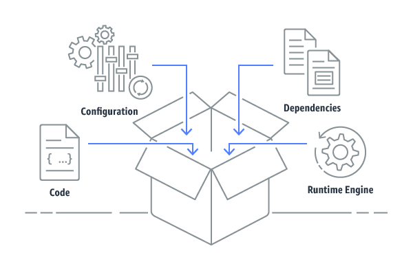
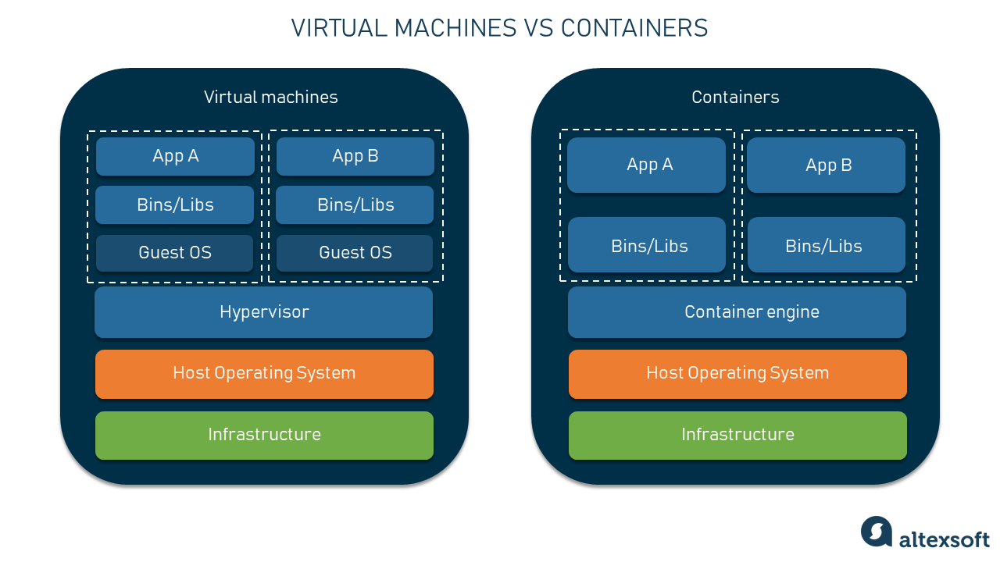
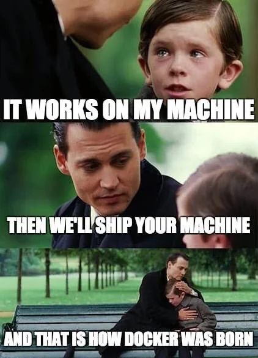
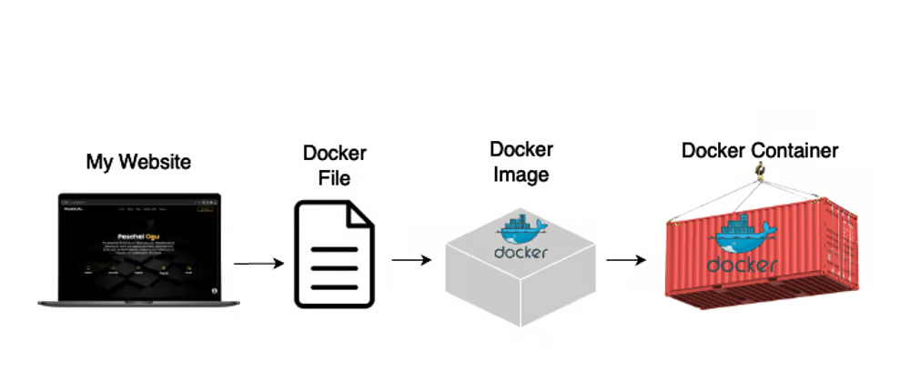
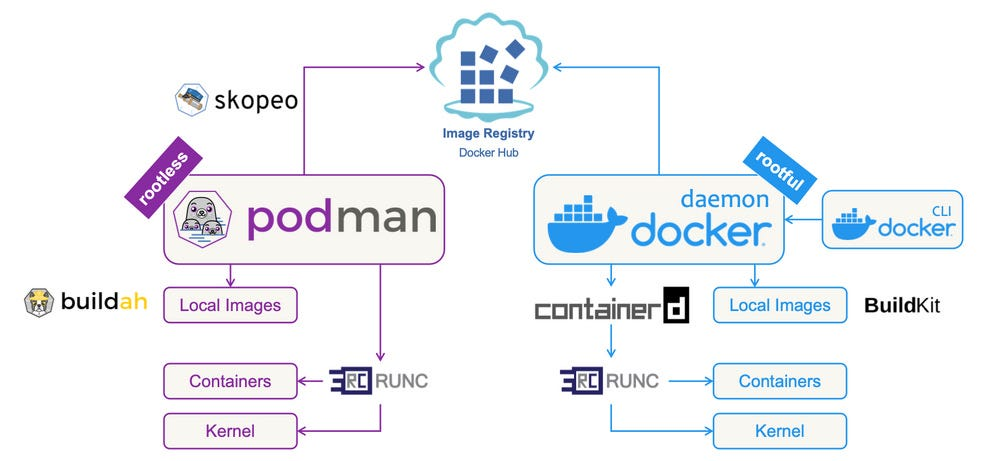
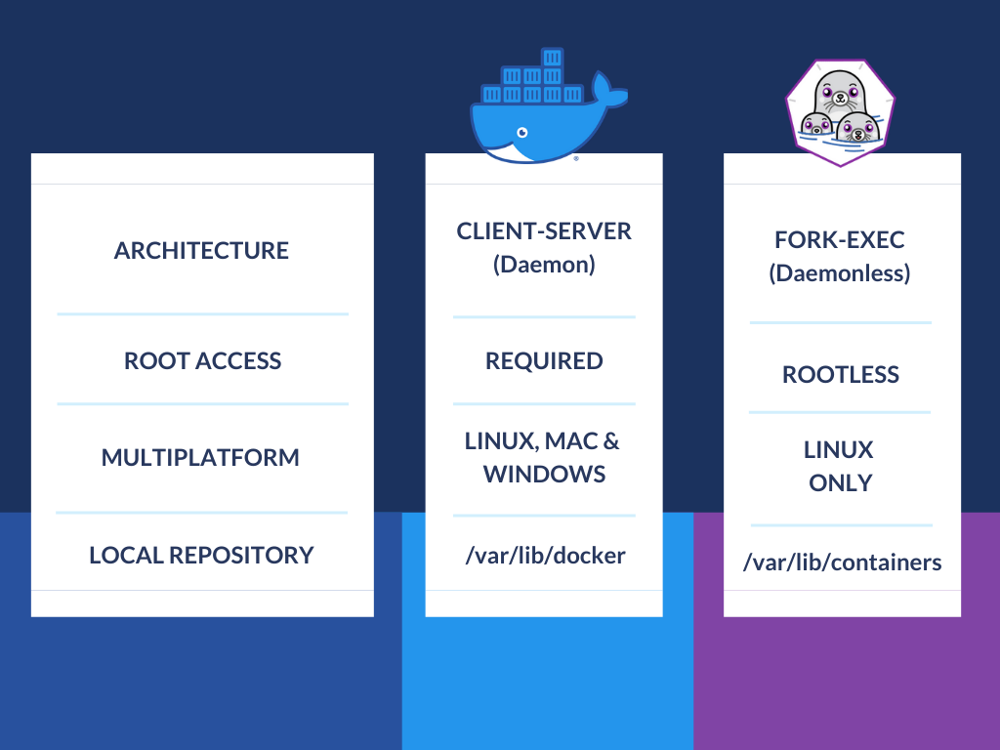

12. Containers#
When you think of containers, you probably don’t think of software. You might think of tupperware, or boxes, or shipping containers, ways to package various things.But containers in software are also ways to package things, just packaging software rather than real life objects. Containers have revolutionized the way we develop, deploy, and manage applications. They offer a level of space efficiency and consistency that traditional virtual machines (VMs) and other deployment methods haven’t been able to compare to. In this chapter, we will go through the essentials of using containers effectively and hpw to build container images with tools like Docker and Podman.

Image Source: https://faun.pub/what-is-a-container-78f08ef884a8
12.1. What Are Containers#
You can think of containers as little packages of software which are deployed. They are a lightweight form of virtualization that package an application and its dependencies into a single, portable container. Unlike VMs, which are made up by an entire operating system, containers share the host OS’s kernel but maintain isolated user spaces. This means they are more efficient and faster to start up, making them way more scalable and accessible. They can also be started both locally, and in the cloud.
12.2. Why Use Containers?#
Why do we use containers? Well, have you ever had code run on your computer that doesn’t run on someone else’s? Or have you ever been caught in dependency hell, where you’re trying to upgrade and downgrade your packages, just so you can just run your code? Software is constantly being worked on, and the time when you download it or what version you decide to download has a lot to do with the functionality and features of that software. And someone else who might have downloaded that package may have a different level of functionality, or they may not have that package at all! So, to keep everything consistent for everyone using it, we use containers.

Image Source: https://www.altexsoft.com/blog/docker-pros-and-cons/
We use containers for many reasons. The first is to create a consistent envionment. One benefit of containers is that they ensure that your application behavesthe same way regardless of where it’s deployed. So, if it’s locally, on your friend’s computer who has a bunch of different versions of software ownloaded, it works the same- and in the same environment. This means that the “works on my machine” problem is solved by providing a consistent environment1
Another important pro of using containers is the isolation and security they offer. As you may know from the four pillars of object oriented programming, encapsulation is really important. We don’t want most of our users to directly interact with out code, for many reasons. Because containers run in isolated environments, this offers us isolation and security that does encapsulation for us.This isolation also enhances security by limiting the scope of potential breaches.It also means that different containers can run different applications or versions of an application without conflicts.
Containers are also often called “lightweight” because they are very resource efficient. People consider containers to be lightweight compared to VMs because they share the host OS’s resources. This efficiency allows you to run more containers on the same hardware, making them take up way less computing power!
Another benefit of containers are their portability, AKA their ability to work in different environments. Containers can run on any system that supports container technology, making it easy to move applications between different environments, whether it’s from a developer’s laptop to a staging environment or from on-premises hardware to the cloud.

Image Source: https://www.reddit.com/r/ProgrammerHumor/comments/y8qylu/docker_is_born/
12.3. Exercise: Getting Started with Containers#
To get started with containers, you’ll need to familiarize yourself with some key tools like Docker and Podman. These tools use container files to build images, which you can think of as a snapshot of an environment. The container file gives the instructions needed to build that snapshot for your application to run in. Another way to think of container files is as a blueprint for the container, a read-only template that contain instructions. Now let’s go into actually building a container. The container itself, in formal terms, are container images running as isolated processes. But you can think of them as literal containers filled with software that create an environment for your software to run in. Container images are saved in repositories in the same way you save code in a repository. Docker Hub, Amazon ECR, or Red Hat’s Quay are public registries where you can find and share Docker images, almost like Github. But these aren’t the only places you can find container images, there are many different repos to check out.
12.4. Using Docker#
Download and install Docker from Docker’s website: https://www.docker.com/get-started. This link can help you get setup for based on your operating system, like Windows, macOS, and Linux.
Let’s try running our first container!
Once Docker is installed, you can run your first container. Open your terminal run the following command to run a simple container using the official hello-world image:
docker run hello-world
This command pulls the hello-world image from Docker Hub (if it’s not already downloaded) and runs it in a container. You will see a message confirming that Docker is installed and working correctly.
Let’s create a docker image.
To build your own Docker images, you’ll use a containerfile—a text file with instructions on how to build an image. Here’s a simple example:
First make a folder called flask-app. Flask is a popular package for developing websites with a python backend.
Inside flask-app create a file called flask-app.py In flask-app.py, include this code, for our flask web app:
from flask import Flask
app = Flask(__name__)
@app.route('/')
def hello_world():
return 'Congrats, you built a container!'
if __name__ == '__main__':
app.run(host='0.0.0.0', port=8000)
Then create a file called container file in the same folder, the comments contain instructions explaining container files:
#from gives us a base image to work with, it helps identify some of the underlying architecture we want to create our container with
#you don't have to use from, but it's often easier for beginners to use a base image that exists
#we also tend to use slimmed images for space efficiency, as you can see here
FROM python:3.11-slim
#user sets who we run as, here we will run as root
USER root
#env sets our environment variables
#here we are usig it to run pip as root
#so it doesn't give us any error messages
ENV PIP_ROOT_USER_ACTION=ignore
#workdir sets our working directory
#it's necessary for a lot of other commands like RUN, CMD, ENTRYPOINT
#we'll learn about those later
WORKDIR /flask-app
#copy takes in a source and destination, in that order
#if you want to copy files from your local filesystem into the container
#similar to the cp command in unix environments!
#here we copy everything in our folder (.) into the app directory (/flask-app)
#we can use a period for his because we are set our workdir
COPY . /flask-app
#run runs commands inside your container
#you can use commands you would use in the command line here!
#try to condense run commands using && \
#every new command adds a layer to your container image, so this helps with efficiency
RUN pip install --upgrade pip && \
pip install Flask==3.0.3
#expose a port to run it on locally, here we are running on port 80
EXPOSE 8000
#there can only be one cmd in a container file
#cmd gives us the command to help run our container
#an example would be CMD["executable", parameter1, parameter2]
CMD ["python", "flask-app.py"]

Image Source: https://dev.to/paschalogu/how-i-deployed-my-website-as-a-container-3fje
To build an image from this container file, navigate to the flask-app directory and run this command:
docker build -t flask-app .
This command builds an image named flask-app. You can run it with:
You have to build to run an image!
docker run -p 4000:8000 flask-app
This maps port 8000 inside the container to port 4000 on your host machine. You can click on the link provided in your terminal to
Manage Containers
Docker provides some commands to help you manage containers, let’s go over some of them:
List Containers:
docker psshows running containers. Usedocker ps -ato see all containers, including stopped ones.Stopping a Container:
docker stop <container_id>stops a running containerRemove a Container:
docker rm <container_id>removes a stopped containerView Logs:
docker logs <container_id>displays the logs from a container
12.5. Introducing Podman#
Podman is an open-source container management tool that provides a Docker-compatible experience while offering additional features and capabilities. It is often praised for its focus on security and its daemonless architecture. Here’s how Podman compares to Docker and how you can get started with it.
Installing Podman
Podman can be installed on various Linux distributions and is available for Windows and macOS. Installation instructions for different operating systems can be found on the Podman installation page.
For example, on Ubuntu, you can install Podman with:
sudo apt update
sudo apt install podman
Running Containers with Podman
Here’s how you can run a container using Podman, starting with the
hello-worldimage:podman run hello-world
Podman also uses container files for building images. To build and run a container, you can use similar commands:
podman build -t flask-app . podman run -p 4000:8000 flask-app
Managing Containers with Podman
Podman provides commands that manage containers:
List Containers:
podman psshows running containers. Usepodman ps -ato see all containers and their idsStop a Container:
podman stop <container_id>stops a running containerRemove a Container:
podman rm <container_id>removes a stopped containerView Logs:
podman logs <container_id>displays the logs from a container
Looks pretty similar, huh?

Image Source: https://levelup.gitconnected.com/docker-vs-podman-a-new-era-in-secure-orchestration-957ea2123098?gi=e3546e23a3dd
12.6. Podman vs Docker#
While Docker and Podman have the same 1:1 actions, there are some differences beyond the fact that Docker runs as root. Podman is more modular, which means there are bigger parts it’s broken up into.
There’s:
Podman - a container image manger
Buildah - a container builder (Fun fact: named buildah for the Boston accent of the creator!)
Skopeo - an inspection manager for images
runc - a tool for spawning and running container
crun - an optional runtime, written in c, for container
Podman takes a different approach to managing containers. True to its name, Podman can create “pods,” which are groups of containers that work together, similar to Kubernetes pods. This means you can manage multiple containers as a single unit under one name.
A big plus of Podman is that it can run Kubernetes pods directly without needing extra tools like Docker Compose. This makes it easier for developers to share resources by putting different parts of an application—like the frontend, backend, and database—into separate containers within a pod. Plus, you can export these pod setups to Kubernetes-compatible YAML files, making it simpler to move containers from development to production.

Image Source: https://novateus.com/blog/podman-vs-docker/
12.7. Container Tips#
Use Minimal Base Images: Start with the smallest base image, many docker images are made smaller and stripped so they’re more space efficient
Condense Commands: Adding a new command like
RUNorCOPYcan add extra layers yo an image and make them bigger, using at the end of commands&& \allows you to condense commands and make more efficent imagesKeep Images Up-to-Date: Be sure to regularly update your images to include the latest security patches and improvements to ensure that you’re working with secured, maintained software
Limit Container Privileges: Run containers with the least amount of privilege necessary to mitigate security risks (it doesn’t always make sense to run as root)
Monitor and Log: Implement monitoring and logging solutions to keep track of container performance and troubleshoot issues
12.8. Conclusion#
Containers, whether managed with Docker or Podman, have become essential to modern application development, giving you unmatched portability, efficiency, and consistency. By understanding the basics of these tools and how to manage containers effectively, you can make the stuff you build more accessible to a wider number of users, and never run into the, “well, it worked on my machine”, again!
Happy Containerizing!